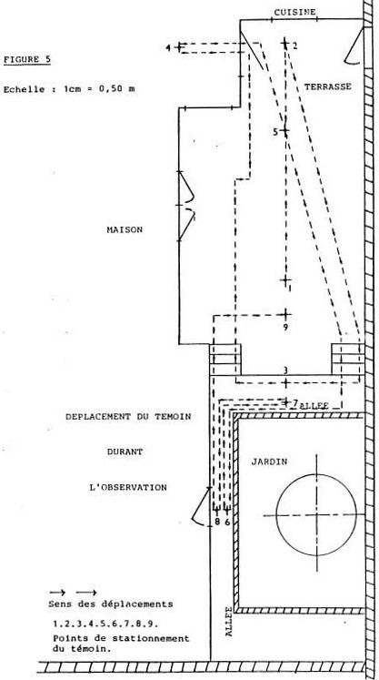

Attiré par la curiosité et le désir d'observer en détail ce phénomène dans sa phase stationnaire, Monsieur Henri
accomplira un grand nombre de déplacements, il s'éloignera, se rapprochera, ira même jusqu'à se pencher pour
regarder.
Les divers déplacements de Monsieur Henri comprennent 9 positions d'arrêt correspondant
à des moments particuliers d'observation. La figure 5 reproduit l'ensemble du trajet reconstitué avec les 9 points.

Figure 5
Position initiale d'où Monsieur Henri observe le phénomène qui se rapproche.
Monsieur Henri, surpris recule sur la terrasse jusqu'au mur de la cuisine.
Monsieur Henri se rapproche du phénomène, descend les escaliers de la terrasse, et
vient se placer devant la porte de l'atelier.
Il prend la décision, pour accréditer sa perception de l'évènement, de prendre une photographie ; il se rend alors
dans la villa, au 1er étage, précise-t-il, puis, muni de l'appareil, il redescend sur la terrasse.
Sur la terrasse, il essaie, vainement, de prendre une photographie.
Le témoin devant cette tentative infructueuse de prise de photographie, décide de s'approcher au plus près de
cette forme stationnant au-dessus de son jardin. Pour cela, il emprunte l'escalier (côté gauche de la terrasse),
longe l'allée devant la terrasse, puis, vient se placer devant la porte d'entrée de son atelier. De cette position,
il observe longuement et minutieusement le phénomène.
Nouveau déplacement dans l'allée bordant la terrasse pour observer sous un autre angle.
Retour devant l'entrée de l'atelier.
Quelques instants après, Monsieur Henri, voulant regarder avec davantage de hauteur
(voir figure 2) et de recul, cet objet, s'éloigne en remontant sur la terrasse. C'est dans cette position qu'il
observe le départ et la disparition du phénomène.